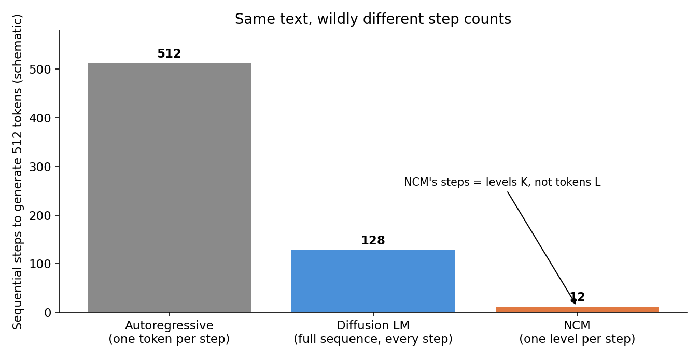
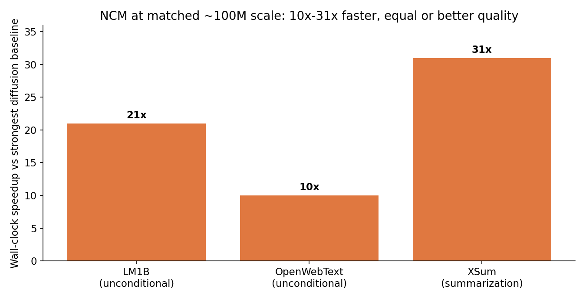
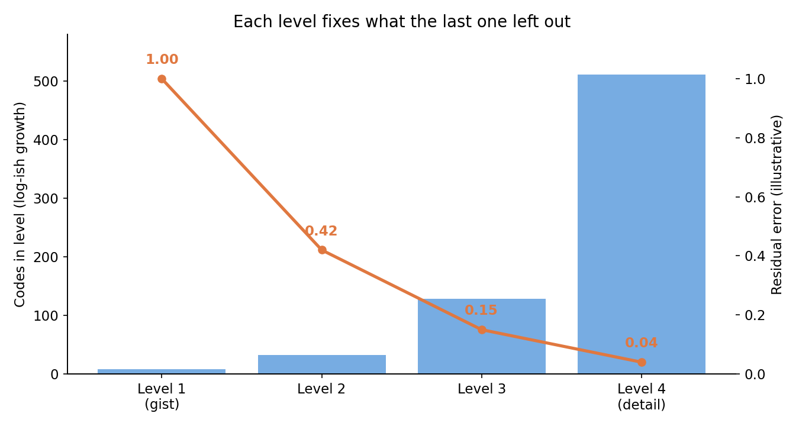
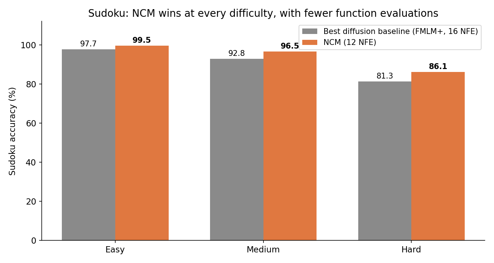

Every language model you have ever used writes the same way: one token, then the next, then the next, in a strict left-to-right line. A 500-word answer takes hundreds of sequential steps, and no amount of GPU parallelism changes that — step 200 cannot start until step 199 finishes. Diffusion language models broke the line by refining all positions at once, but they pay for it: every denoising pass processes the full sequence, and cutting passes degrades quality fast.
A paper from Stanford's Hazy Research lab and Together AI, posted to arXiv on October 9, 2026, proposes a third way. Next-Concept Modeling (NCM) does not predict tokens at all. It predicts a hierarchy of discrete codes, coarse to fine: first a handful of codes that pin down the gist, then progressively more codes that fill in the detail — each level predicted fully in parallel. At matched ~100M-parameter scale, it beats the strongest diffusion baseline on LM1B while running 21× faster, matches it on OpenWebText at 10× faster, and matches its summarization quality on XSum at 31× faster. It also trains on 4–5× fewer tokens.
This post explains the trick, why it works, and where it stops short of replacing your favorite model.
The ELI5 version
Think about how a human writes an essay. Nobody composes word by word from a blank page with no plan. You sketch an outline first — the argument in a few bullet points — then expand each bullet into paragraphs, then polish sentences. The outline is cheap: a few decisions that constrain everything after. The detail work is where the words pile up, but by then the structure is already fixed.
Today's LLMs do the opposite. Next-token prediction is writing with no outline: every word is a fresh gamble conditioned on everything before it, and a wrong turn early can only be patched by later words, never revised. Diffusion models are the other extreme: they draft the whole essay at once and revise it dozens of times, but every revision pass re-reads the entire draft, so each pass is expensive.
NCM is the outline-first writer, formalized. Stage one trains a compressor — a multiscale residual VQ-VAE — that turns any text into a stack of code levels. Level 1 is a short sequence of codes capturing the global structure; each later level is a longer sequence capturing what the previous levels got wrong. Stage two trains a transformer that generates the levels in order, predicting all codes within a level in parallel. Generating a passage takes as many sequential steps as there are levels — a handful — not as many as there are tokens.
How it works: two stages, one short path
Stage 1: learn the hierarchy. A VQ-VAE quantizes continuous vectors to the nearest entry in a learned codebook — the same idea behind neural audio codecs. Residual quantization repeats the trick on the leftover error: level 1 approximates the text, level 2 quantizes the error level 1 left behind, level 3 quantizes what remains, and so on. The result is a hierarchy from short-and-coarse to long-and-fine, with a decoder that maps the full stack back to text. The authors note the hard part for text, versus images: there is no natural downsampling (an image halves cleanly; a sentence does not), and reconstruction must be near-exact — one wrong token can flip meaning, break code, or invalidate a Sudoku solution.
Stage 2: generate level by level. The transformer is trained to predict all codes of level k in parallel, conditioned on the cumulative reconstruction of levels 1 through k−1. Training predicts all levels in a single forward pass with a cross-entropy loss; generation walks the levels sequentially, coarse to fine. The paper's own translation trace shows the behavior: coarse levels fix the high-level idea, finer levels fill in and correct the content.
Why this is fast comes down to two multiplications. Diffusion needs many passes over the full sequence length L. NCM needs K passes, where K is much smaller than L — and the early passes process short coarse sequences, not the full length. Fewer steps, and cheaper steps.

The state of the art: what the numbers actually say
The evaluation is at research scale — ~100M parameters, against discrete-diffusion, flow-based, and hybrid baselines — not against frontier models. Within that frame, the results are striking:

- LM1B (unconditional): better generative perplexity than the strongest diffusion baseline, 21× faster wall-clock.
- OpenWebText (unconditional): competitive quality, 10× faster.
- XSum (summarization): matches the strongest diffusion baseline's ROUGE-L, 31× faster. Spend the saved time on more candidates and Minimum Bayes Risk selection, and NCM beats that baseline's ROUGE-L by about 7% within the same sampling-time budget.
- Training budget: competitive quality with 4–5× fewer training tokens than strong diffusion baselines, counting both tokenizer and generator training. The baselines it beats train for 1M steps — over 500B tokens on OpenWebText.
- Step counts: 4–11× fewer function evaluations on unconditional generation, 6–16× fewer on conditional generation, with sample diversity (unigram entropy) staying close to the data — the failure mode that usually punishes few-step diffusion.

The reasoning result is the one that surprised me most. On Sudoku — a task where one wrong digit kills the whole board — NCM beats both autoregressive and diffusion baselines at every difficulty level, using fewer function evaluations than any of them:

Hard boards: 86.1% for NCM (25M parameters, 12 function evaluations) versus 81.3% for the best diffusion baseline (29M, 16 evaluations). The gap widens with difficulty — 1.8 points on easy, 3.7 on medium, 4.8 on hard — which is exactly the pattern you expect if the coarse levels are doing real planning: the harder the constraint problem, the more the outline matters.
The lineage is worth noting. Next-scale prediction already won in images (VAR-style models generate an image scale by scale), and concept-level modeling has been circling text for years — MEGABYTE's byte patches, H-Net's learned chunks, Large Concept Models' sentence representations. NCM's contribution is making the hierarchy discrete, residual, and generative for text, with a decoder accurate enough that the coarse-to-fine path survives contact with exact-match tasks like Sudoku.
The honest caveat — where this could break
Three things to keep in view. First, scale. Everything here is ~100M parameters on LM1B, OpenWebText, XSum, and Sudoku. The paper shows preliminary scaling — bigger NCM improves LM1B quality at fixed training budget — but nothing at the billion-parameter frontier, and no evidence yet that the hierarchy stays stable when sequences get long and vocabularies get large. Second, the tokenizer is a second model to train and get right. The whole scheme stands or falls on the VQ-VAE's reconstruction: if the coarse levels smuggle in ambiguity the fine levels cannot resolve, generation quality caps out no matter how good the transformer is. Third, diffusion is not standing still. Few-step samplers, distillation, and block-autoregressive diffusion (which recovers KV caching at the cost of some parallelism) are all attacking the same latency problem from the other side; NCM's 10–31× lead is measured against unguided, undistilled baselines, and the distilled-diffusion comparison is the one that matters for production.
None of that dims the core idea. Next-token prediction has survived for years partly because nobody had a better generation order for text. NCM says the order is the variable: generate the plan, then the details, in a handful of parallel steps. If it scales, the "one token at a time" era ends not with a faster chip, but with a shorter path.
Takeaways
- Today's LLMs generate one token per step; diffusion models refine all positions for many full-sequence passes. NCM generates a hierarchy of discrete codes, one level per step, all codes within a level in parallel — so steps equal levels (K), not tokens (L).
- The numbers, at ~100M scale: 21× faster than the strongest diffusion baseline on LM1B with better perplexity, 10× on OpenWebText at competitive quality, 31× on XSum at matched ROUGE-L, and 4–5× fewer training tokens overall.
- Reasoning is the tell. On Sudoku, NCM beats autoregressive and diffusion baselines at every difficulty (hard: 86.1% vs 81.3%) with fewer function evaluations — the coarse levels act as a plan.
- The mechanism is two stages: a multiscale residual VQ-VAE learns the coarse-to-fine code hierarchy, then a transformer generates it level by level, conditioned on the cumulative reconstruction so far.
- The open questions are scale and the tokenizer. No billion-parameter results yet, and the whole approach depends on near-exact reconstruction from the code hierarchy. The distilled-diffusion comparison — not the unguided-baseline one — is the number to watch next.
- Check it yourself. The companion notebook replays residual quantization on a toy vector (error falling level by level), recomputes the step-count and speedup arithmetic, and verifies the Sudoku margins from the paper's table.